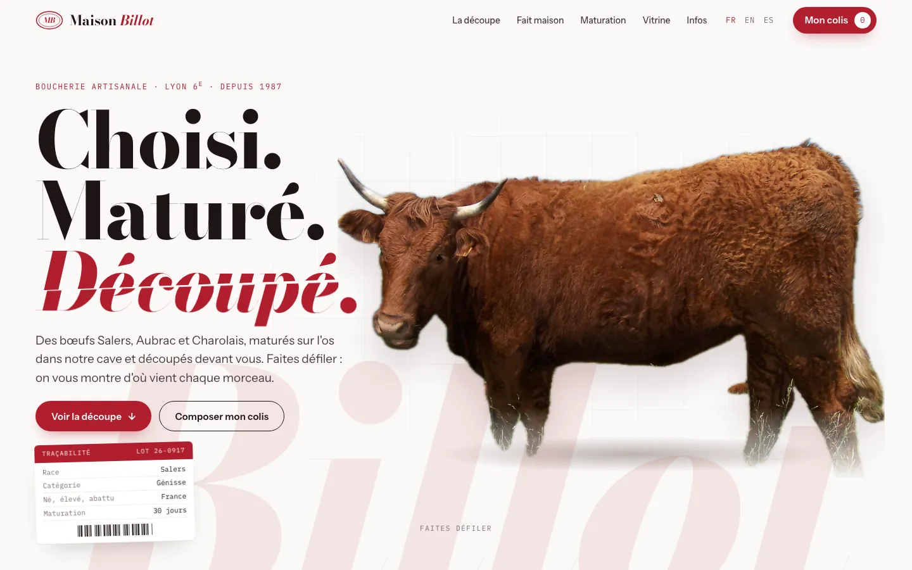
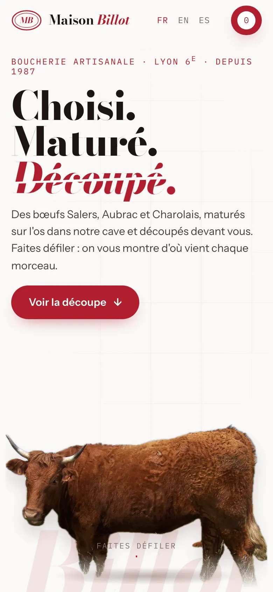

Maison Billot
La découpe du bœuf expliquée pièce par pièce : au défilement, la bête se découpe en 23 morceaux photographiés, chacun relié à sa zone.
- Anatomie au défilement, 23 zones et leurs pièces
- Guide « Vous cuisinez quoi ? » : barbecue, pot-au-feu, tartare
- Merguez en vue éclatée et cave de maturation interactive
- Colis click & collect, paiement en boutique


Vidéo promo · 60 s
YouTube, Facebook sur ordinateur, site